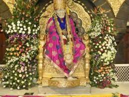
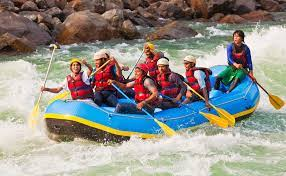
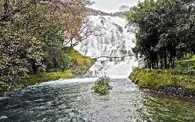

Shirdi Sai Baba
Located at a distance of 122 Km from Nasik in the Ahmednagar district of Maharashtra, Shirdi is the home of Sai Baba. It is believed that Sai Baba arrived at Shirdi in 1858 and spent 60 years of his life here until he attained salvation in 1918. Sai Baba is popularly known as the 'child of God', as he always spread the message of universal brotherhood.
Apart from his shrine, there are many small temples in the complex, such as Chavadi, Samadhi Mandir, Dwarkamai. Shani Shignapur is located at a distance of 72km from Shirdi.

Mahabaleshwar
Mahabaleshwar is a hill station located in the Western Ghats, in Satara district of Maharashtra. Apart from its strawberries, Mahabaleshwar is also well known for its numerous rivers, magnificent cascades and majestic peaks. It is among the most sought after weekend getaways from Pune & Mumbai, located about 120km south-west of Pune and 285km from Mumbai.
Mahabaleshwar is also a sacred pilgrimage place for Hindus as the Krishna river originates from here. Once a summer capital of the British, the hill station of Mahabaleshwar comprises of ancient temples, boarding schools, manicured and lush green dense forest, waterfalls, hills, valleys. It is often used as a base to visit the magnificent Pratapgad Fort, located an hour away.

Kolad
Famous for white water rafting, Kolad is a thriving tiny village in the Raigad district in Maharashtra. Known for its cascading waterfalls, green meadows and picturesque backdrop of Sahyadris, Kolad is gaining traction as an adventure sports destination with provisions for rafting, rappelling, and kayaking.
Kolad boasts of natural beauty which blooms during the monsoons. Known as the Rishikesh of Maharashtra, the majestic valleys and picturesque backdrops make Kolad a treat for nature lovers as well as shutterbugs. The river Kundalika is a big attraction here especially for people who interested in white water rafting. The Kundalika River is one of the fastest flowing rivers of the South which makes it ideal for water rafting and other adventure activities. Along with that, there are a couple of forts, dams and waterfalls which make Kolad a good holiday destination with something to offer to everyone.
Kolad is loaded with natural plants and lavish greenery and its wonderful valleys and marshlands give it a portrait-like edge. Kolad is popular for the abundance of waterfalls, rough topography and rocky mountains. Visitors can go for treks and other sporting activities like paragliding and parasailing.
Ajanta & Ellora Caves
Ajanta and Ellora caves, considered to be one of the finest examples of ancient rock-cut caves, are located near Aurangabad in Maharashtra, India. Ajanta and Ellora caves complex is adorned with beautiful sculptures, paintings, and frescoes and include Buddhist monasteries, Hindu and Jain temples. The Ajanta caves are 29 in number and were built between the 2nd century BC and 6th century AD, whereas the Ellora Caves are more spread out and 34 in number and dates to the period between 6th and 11th Century AD.One of the most famous places in the entire Ajanta and Ellora Caves is the Kailash Temple, which is also the single most massive monolithic structure globally. These rock-cut caves containing carvings are some of the best examples of ancient Indian architecture and sculpture.

Bhandardara
Bhandardara, a hill station nestled in the Sahyadri ranges of Maharashtra, has all the nature's blessings a place can get. The lush greenery, the humble waterfalls and surrounded by high mountains makes for the perfect holiday spot for city dwellers.
Situated in the Ahmednagar district of Maharashtra, Bhandardara is 117 km. from Mumbai and is easily accessible through roadways. This little village is packed with so many attractions coupled with the serenity of the nature that it makes for an adventurous weekend to run away from the hustle and bustle of the cities.
Lonawala
Situated in the Sahyadri range of the Western Ghats close to Pune and Mumbai, Lonavala is the most visited hill station in Maharashtra and the place to be during monsoons. With lots of waterfalls, lakes and hills around, it is a popular destination for camping, trekking and other adventure sports.
Surrounded by dense forests, waterfalls, and dam alongside lakes, it is a must-visit if you admire nature. Located at an elevation of 624 m above sea level, Lonavala is one of the twin hill stations - Lonavala and Khandala (these two can be easily visited together). The popular tourist attractions in Lonavala are Bhaja caves, Bushi dam, Karla caves, Rajmachi fort, Ryewood lake, among others. Lonavala is also popular for the treks like the Andharban trek that starts from a village called Pimpri and ends in Bhira.
Lonavala is famous for its production of the hard candy chikki which is a sweet eatable thing made from different nuts mixed with jaggery. It is also a major stop on the railway line which connects Mumbai and Pune.
Khandala
Khandala is a popular hill station in Maharashtra, perched on the foothills of Sahyadri in the Western Ghats. Khandala provides for a perfect weekend respite for the Mumbai population, with its scenic valleys, grassy hills, serene lakes and misty waterfalls.
It is one of the twin hill stations - Lonavala and Khandala. The place immortalized by the popular Bollywood song, "Aati Kya Khandala", is a must-visit destination for everyone looking for beautiful nature, pleasant weather and the feeling of mist in the air. The natural beauty of Khandala blooms to its zenith and reveals a magical charm during the monsoons. Its meandering waterfalls and glittering lakes attributes to the majestic look an imposing ambience.
The Mumbai-Pune expressway passes through Khandala. Due to this easy accessibility, it is a popular hiking spot from nearby cities. The Duke's Nose peak and Karla Hills are the two popular spots for rock climbing. Located near two more popular tourist hotspots, viz. Lonavala (3 km away) and Karjat (7 km), Khandala is one of the perfect hill retreats for both trekkers and young couples.
Kolhapur
Kolhapur is situated on the banks of the river Panchaganga in the south-west region of Maharashtra. Situated 230 kilometres away from Pune, Kolhapur is one of the princely states and boasts of a rich legacy dating back to the times of the Marathas. Presently, Kolhapur is known for Kolhapuri sandals and necklaces that are sold worldwide.
Kolhapur derives its name from a mythological story of Kolhasur - a demon who was slain by Goddess Mahalakshmi. The famous Mahalakshmi temple is situated here in the honour of Goddess Mahalakshmi. Kolhapuri chappals, Kolhapuri jewellery and Kolhapuri cuisine are famous all over India. It is a tourist-friendly destination, having no problem in commuting to accommodation and food.